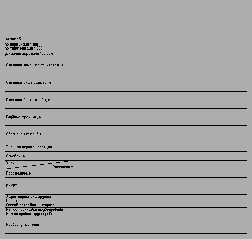

Команда: profile_create_new_profile
Команда: profile_create_new_profileКоманда создания подвала профиля.
Команда: profile_create_new_profile
 Выберите полилинию трассы:
Выберите полилинию трассы:
 Указывает полилинию оси трассы (можно как 2D так и 3D)
Указывает полилинию оси трассы (можно как 2D так и 3D)
По порядку что за чем:
Название - уникальное (в пределах этого документа) имя профиля, в одном чертеже не может быть двух профилей с одним названием
Вид профиля - выпадающий список с настроеными видами профилей (подвалами) как правило на каждую комуникацию свой профиль можно настроить свой но об этом ниже
Числитель вертикального масштаба - целое число отвечающее за вертикальный масштаб профиля.
Числитель горизонтального масштаба - целое число отвечающее за горизонтальный масштаб профиля.
Далее поле Условный горизонт
Галочка Авто отметка УГ позволяет не думать какой условный горизонт будет у профиля при первом добавлении данных на профиль будет вычислена самая низкая отметка и от нее вычислен условный горизонт
Если по каким то причинам нужно построить профиль с каким то определенным условным горизонтом следует голочку снять и в поле Отметка УГ ввести желаемое значение.
Поле Чистое место над УГ в м отвечает за высоту от условного горизонта до самой низкой точки. Учавствует при автоматическом определении условного горизонта.
Галочка Нанести пересечения позволяет программе просматривать содержимое чертежа на счет пересечения комуникаций с осью трассы. Комуникации распознаются по типу линии и наносятся на профиль. Какому типу линии какая подпись соответствует можно посмотреть и настроить нажав кнопку Настроить.
Галочка Подписать точки предписывает искать круглые мультивыноски которые указывают на вершины оси трассы и если таковые обнаружены подписать в графу Номера точек, если таковая имеется в профиле.
Галочка Наносить углы поворота рисует условные обозначения направления и величины поворота оси трассы
Поле Начальный пикет позволяет задать первый пикет профиля. Имеет смысл задавать значение если в используемом профиле есть графа Пикеты. Задавать начальный пикет можно как в метрах например "123.12" так и в пикетах "1+23.12".
Диалоговое окно после нажатия кнопки Настроить - есть возможность отредактировать текст вставки существующих типов линий, удалить или создать новые.
Теперь о видах профиля все виды какие есть в выпадающем списке можно редактировать или создавать свои новые. Для этого нужно в выпадающем списке выбрать нижнюю строку Редактировать

Поле Вид профиля отвечает за манипуляции с видами профиля.
В выпадающем списке выбираем вид профиля который будем редактировать.
Кнопка Создать позволяет создать новый вид профиля, имя профиля не может повторяться.
Кнопка Переименовать периименовывает текущий профиль, новое имя не может повторять существующие.
Кнопка Удалить удаляет текущий профиль
Поле Содержимое подвала позволяет отредактировать строки подвала профиля
Поле разделено на три части в левой части отображается содержимое подвала текущего вида профиля, в правой стандартные строки которые можно добавлять в текущий вид профиля и в середине кнопки управления этими списками
Содержимое левого списка соответствует содержимому подвала при создании профиля
В правом списке содержатся все элементы из которого состоит левый. Как набор материалов для создания.
Кнопки по порядку
Добавить - добавляет выбранный элемент в правом списке под выделеный элемент в левом списке
Вверх/Вниз - позволяет перемещать выбранный элемент в левом списке вверх и вниз по списку
Редактировать - открывает окно редактирование параметров элемента в левом списке
Удалить - удаляет выбранный элемент в левом списке
Редактировать - открывает окно редактирование параметров элемента в правом списке
Поле Параметры текущего вида профиля содержит общие параметры вида профиля
Галочка Вставить линейку отвечает за вставку линейки отметок на профиль. Если галочка стоит то линейка будет вставлена при первом добавлении высотных данных (точек, линий) на профиль
Высота текстов заголовков в мм - отвечает за размер текста в заголовках подвала
Ширина блоков заголовков в подвале в мм - даже добавить нечего
Расстояние от линейки до начала профиля в мм - зазор между началом профиля и линейкой (правым краем блока заголовков)
Текстовый стиль профиля - текстовый стиль которым отибражаются все текстовые элементы профиля. Если выбраного текстового стиля нет в текущем чертежа будет использован текущий стиль текста.
Поле Строки описания характеристик профиля содержит параметры оформления профиля выше условного горизонта
Название - в поле можно внести текстовую строку которая будет подписана над блоком зоголовков профиля
Подпись перед вертикальным масштабом - в поле можно ввести текст к которому при нанесении на профиль добавляется значение вертикального масштаба
Подпись перед горизонтальным масштабом - в поле можно ввести текст к которому при нанесении на профиль добавляется значение горизонтального масштаба
Подпись перед условным горизонтом - в поле можно ввести текст к которому при нанесении на профиль добавляется значение отметки условного горизонта
Высота текста пересечек в мм - при нанесении пересечек на профиль это значение будет использоваться в высоте шрифта текста.
Чисел после запятьй в выносках - при использовании команды определения отметка на профиле значение будет использована для отображения отметки с определенной точностью.
Внешний вид окна редактирования параметров строки подвала.
Вернемся в окно редактирование создание вида профиля.
При нажатии ОК изменения сделаные в этом окне сохраняются во внешнем файле и могут быть использованы в других чертежах. По этой же причине отменить изменеия не получится средствами AutoCAD. Для возвращения к значениям по умолчанию следует использовать команду Сброс пользовательских данных.
После всех требуемых настроек давим ОК
Укажи точку вставки профиля:
Указывает точку с учетом что точка будет располагаться в верхнем правом углу блока заголовков, как раз там от куда возможно будет расти линейка
Получаем заготовку подвала профиля. Длина горизонтальных линий соответствует длинне трассы плюс отступ от линейки.
